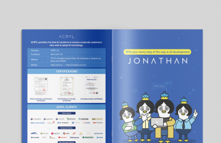

국문 브로슈어를 영문으로 만든다고 하면 번역만 끝나면 될 것 같지만, 실제로는 레이아웃을 다시 설계해야 하는 경우가 대부분입니다. 같은 내용이라도 영어는 국문보다 글줄이 20~30% 길어지고, 중국어는 반대로 짧아집니다.
서체 문제도 있습니다. 국문에서 쓰던 서체가 라틴 알파벳이나 한자를 지원하지 않는 경우가 많아, 언어별로 어울리는 서체 패밀리를 다시 골라야 합니다. 이때 브랜드의 인상이 흔들리지 않도록 굵기와 비례가 비슷한 서체를 찾는 것이 다국어 편집의 기술입니다.
하오커뮤니케이션은 영어 · 중국어 · 일본어 · 프랑스어 등 다국어 카탈로그를 원문 디자인과 같은 톤으로 제작합니다. 수출 박람회나 해외 바이어 미팅을 앞두고 있다면, 번역 원고와 함께 문의해 주세요.